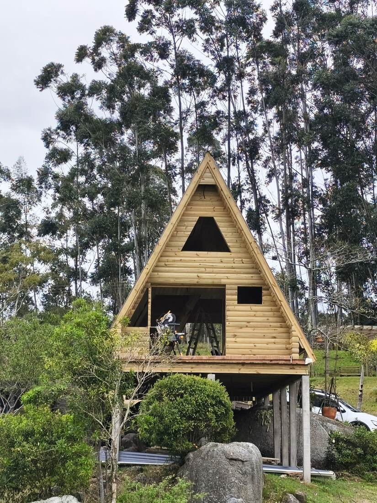
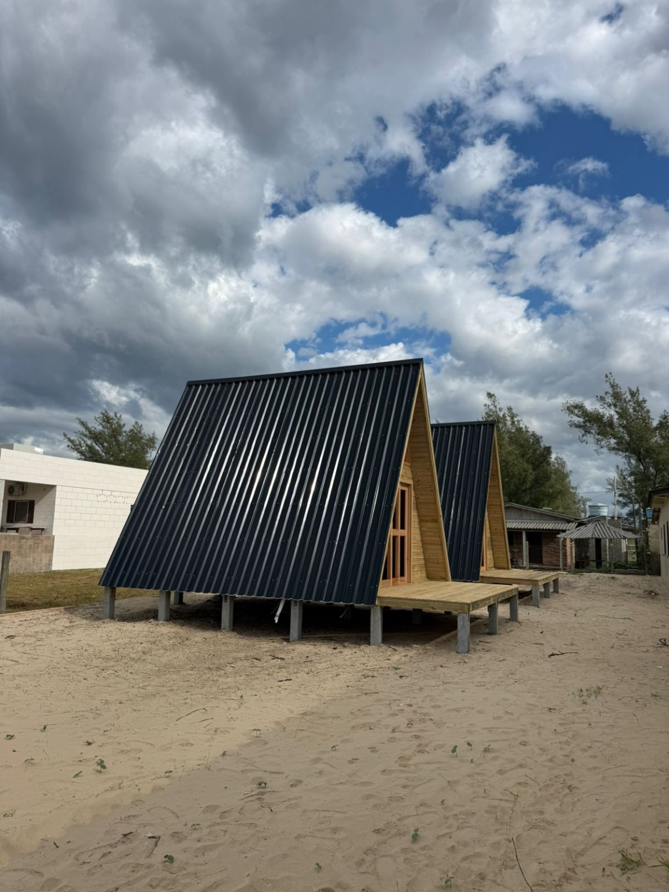
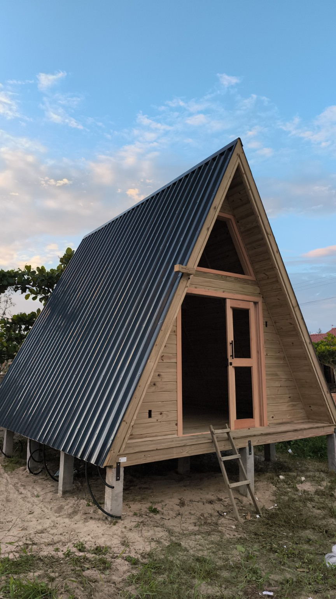

Chalés para hospedagem
Chalés de madeira para quem quer receber turistas ou ter renda com aluguel por temporada.
Gravatal, conhecida pelas águas termais, combina bem com chalés e cabanas de madeira: para morar, para o sítio ou para receber hóspedes. A JP Carpintaria fica em Tubarão, cidade vizinha, e atende Gravatal com visita ao terreno.
Falar sobre meu projeto em Gravatal
Chalés de madeira para quem quer receber turistas ou ter renda com aluguel por temporada.
Cabanas e casas de campo para sítios e chácaras do interior de Gravatal.
Casas de madeira e wood frame para moradia na cidade ou no interior.
Em terrenos com inclinação ou no interior, avaliamos acesso para o material, nivelamento, fundação e escoamento da água da chuva antes de definir a estrutura do chalé ou da cabana.
Chalés de madeira construídos pela JP Carpintaria na região de Tubarão.

Estruturas triangulares com fachadas em madeira e cobertura inclinada.

Detalhe da fachada de madeira, da abertura triangular e do telhado escuro.
Envie a localização do terreno em Gravatal, a área aproximada em m², o número de cômodos, fotos do terreno e referências do estilo que deseja. Com essas informações, combinamos uma visita e preparamos o orçamento.
Enviar informações pelo WhatsApp